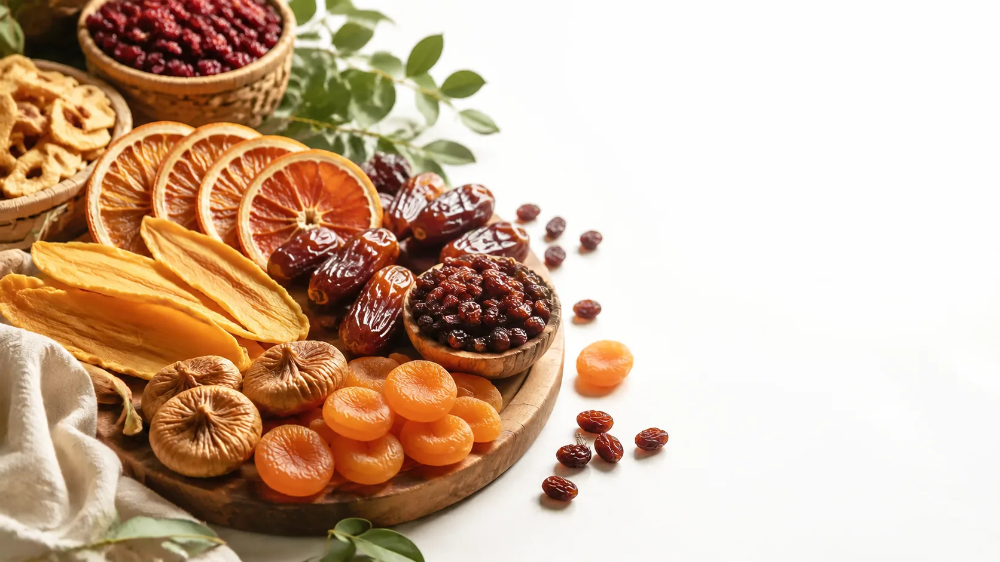
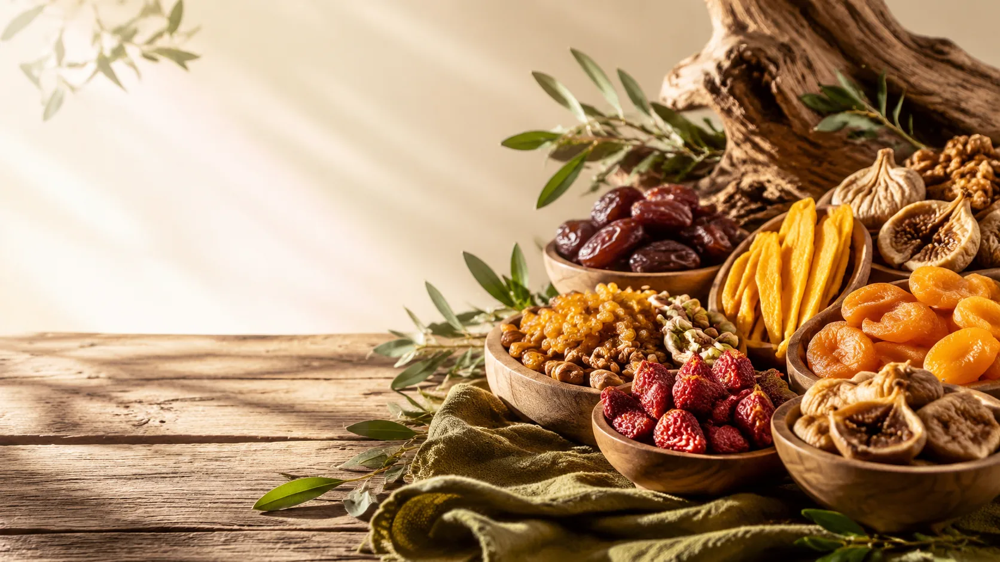

بدون شکر افزوده
طعم طبیعی میوهها بدون افزودن شکر و مواد غیرضروری.

ما با استفاده از بهترین میوههای طبیعی و فرآیندهای استاندارد، تجربهای سالم و متفاوت از میوه خشک ایجاد میکنیم.

ما بهترین میوهها را انتخاب میکنیم و با فرآیند خشککردن استاندارد، طعم و ارزش غذایی آنها را حفظ میکنیم.
انتخاب میوههای باکیفیت و تازه برای بهترین نتیجه.
خشککردن استاندارد با تمرکز بر حفظ طعم و کیفیت.
کیفیت، سلامت و توجه به جزئیات، سه اصل مهمی هستند که در تمام مراحل فعالیت خشکینو دنبال میکنیم.
طعم طبیعی میوهها بدون افزودن شکر و مواد غیرضروری.
تمرکز بر کیفیت طبیعی میوهها و حفظ طعم واقعی آنها.
بستهبندی تمیز و استاندارد برای حفظ کیفیت محصول.
آمادهسازی و ارسال سفارشها با سرعت و دقت بالا.
توجه به استانداردهای کیفی برای ارائه محصولی در سطح حرفهای.
هر مرحله با دقت انجام میشود تا کیفیت و طعم واقعی میوهها تا رسیدن به دست شما حفظ شود.
انتخاب دقیق میوههای تازه و باکیفیت برای شروع فرآیند.
آمادهسازی اصولی و بهداشتی میوهها پیش از فرآیند خشککردن.
استفاده از فرآیند استاندارد برای حفظ کیفیت و طعم طبیعی.
بستهبندی نهایی با رعایت استانداردهای بهداشتی و کیفی.
با خشکینو بیشتر آشنا شوید و داستان ما را از نزدیک دنبال کنید.
آشنایی بیشتر با خشکینو